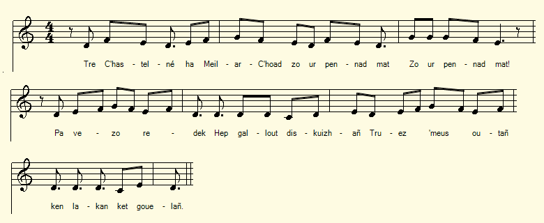
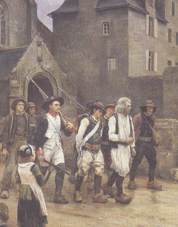

Pennherez Ar Warm e Kollorek
L'héritière Le Gouarm de Collorec
The Heiress Le Gouarm of Collorec
Chant tiré du 2ème Carnet de collecte de La Villemarqué (p. 83/43).
Mélodie
"O tistreiñ eus a Blouneour-Traez"
Arrangement Christian Souchon (c) 2017
|
A propos du titre Cette chanson notée à la page 83/43 du carnet N°2 porte l'en-tête "Pennerez ar Warm e Koloret" et le sous-titre "Variante de Bonaventure". Un bref examen du texte suffit à se convaincre que "Pennherez Ar Warm" (L'héritière Le Gouarm) ne peut pas être le vrai titre de ce chant. La première strophe souligne ironiquement l'exploit que constitue le fait de courir sans arrêt du Moulin-du-Bois (en Saint-Goazec) jusqu'à Châteauneuf-du-Faou (une distance d'environ 5 km). Il est question dans les deux autres strophes de gendarmes qui essayent à grand peine d'acheter des chevaux ou de se faire faire des uniformes. De toute évidence il s'agit soit d'un second chant ayant un sujet identique, soit de strophes complémentaires au chant Bonaventure et les gendarmes (p. 5 du Carnet). Un commentaire du chanteur nous livre un détail supplémentaire: Le propriétaire du moulin où eut lieu l'exploit de Bonaventure a été arrêté. La strophe 3 insiste sur l'indignation unanime de la population acquise à la cause chouanne. L'héritière Le Gouarm de Collorec (Pennerez ar Warm e Koloret) est sans doute la chanteuse. Collorec est une commune située au nord de Châteauneuf, au-delà de Plonevez- du-Faou. . Le paysan Le Scoull, mort en 1830, est désigné comme l'auteur de ces 3 strophes. Nous l'avons déjà rencontré 2 fois (cf. Gendarmes de Châteauneuf et Le citoyen Soufflet). Un troisième titre est donc également à mettre à l'actif de cet ancien "cloarec" (comme il ressort du commentaire qui suit le chant) . Jean-Yves Thoraval semble avoir trouvé la trace de ce barde : un Corentin Le Scoull était agent municipal de Roudouallec en Floréal an V (avril-mai 1797), puis il est devenu maire le cette commune sous le Premier Empire et l'est resté jusqu'en 1821, date à laquelle il a été remplacé par Mathurin Lollivier. Ces indications cadrent parfaitement avec la date des événements racontés par le Barde Le Scoull, en particulier l'assassinat de Soufflet survenu le 15 août 1798. On se souvient quà cette date Lollivier était juge de paix du canton de Gourin. Et le Scoull qui maniait la plume avec tant d'aisance, ne pouvait que faire une brillante carrière politique à l'échelon local. A propos de la mélodie Le présent chant est constitué de strophes de 6 vers de 6 pieds, hormis le premier qui en compte 8, avec des rimes agencées selon le schéma AAxBBy, ce qui rappelle la première strophe des "Gendarmes" (les autres strophes sont pleines d'ajouts qui en rendent la structure moins lisible): "Selaouet holl, O selaouet: Ur zon a zo savet (bis) Savet d'an arserien Eus ar C'hastel-Nevez A iez un devez Mintin (mad da vale) araok an deiz." On propose ici cependant un autre timbre, "O tistreiñ eus a Blouneour-Traez", dont l'origine est donnée à la page O tistrein eus al leur nevez. |
About the title This song recorded on page 83/43 of the notebook N° 2 bears the heading "Pennerez ar Warm e Koloret" and the subtitle "A variant to 'Bonaventure'". A brief look at the text will suffice to convince us that "Pennherez Ar Warm" (The heiress Le Gouarm) can not be the true title of this song. The first stanza ironically praises the feat of someone who ran non-stop from Moulin-du-Bois (a watermill near Saint-Goazec) to Châteauneuf-du-Faou (a distance of about 5 km). The other two stanzas are about gendarmes who try with great difficulty to buy horses or to order new uniforms. Obviously it is either a second song with the same subject, or additional stanzas to the song "Bonaventure and the gendarmes" (p.5 of the 2nd Copybook). A comment by the singer gives us one more detail: The owner of the mill where the Bonaventure exploit took place was put into jail. The stanza 3 insists on the unanimous indignation of the population acquired to the Chouan cause. The heiress Le Gouarm of Collorec (Pennerez ar Warm e Koloret) is probably the singer who performed the song, Collorec being a town located north of Châteauneuf, beyond Plonevez-du-Faou. Farmer Le Scoull, who died in 1830, is acknowledged as the author of these 3 stanzas. We came already twice across the name Le Scoull (see The Gendarmes of Châteauneuf and Le citoyen Soufflet). This former "cloarec" (seminarist), as stated in the comment following the song, should be credited with this third title. M. Jean-Yves Thoraval seems to have found the trace of this bard: a Corentin Le Scoull was municipal agent of Roudouallec in Floréal of the Year V (April-May 1797), then he became mayor in this commune under the First Empire and remained so until 1821, when he was replaced by Mathurin Lollivier. These indications fit perfectly with the events recounted by Barde Le Scoull, in particular the assassination of Soufflet on August 15, 1798. We remember that back then Lollivier was Justice of the peace of the canton of Gourin. And the Scoull, who wielded the pen with such ease, could only have a brilliant political career at the local level. About the tune The present song is composed of stanzas of 6 verses of 6 feet, except the first one which counts 8, with rhymes arranged according to the AAxBBy diagram, which recalls the first stanza of the "Gendarmes" (the other stanzas are full of additions which makes the structure less readable): "Selaouet holl, O selaouet: Ur zon a zo savet (bis) Savet d'an arserien Eus ar C'hastel-Nevez A iez un devez Mintin (mad da vale) araok an deiz." Here, however, another tune is suggested, "O tistreiñ eus a Blouneour-Traez", the origin of which is given on page Back from the new theshing floor dance. |
|
BREZHONEG (Stumm KLT) P. 83/43 Pennherez Ar Warm e Kollorek Variantes de Bonaventure 1. Tre Chastelne ha Meil-ar-Choad A zo ur pennad mat. [bis] Pa vezo red redek hep gallout diskuizhañ, Truez am-eus outañ: 'N'em lakaan da ouelañ! Le meunier du moulin du bois avait été mis en prison. 2. Heb truez na gompasion Eo deut ar garnizon [1] [bis] Hag an archerien o-devez afer bras Da brenañ kezeg ha peb a vantel glas. 3. Tavarnourien, gwrach ar chafe, Peruk'nner ha kere [bis] Ar gemenerien ivez, ha plach ar chrampou(e)z War an archerien azezont dober trouz. Faite par ar Skoul, paysan, mort depuis 1830, qui avait fait des études pour être prêtre. KLT gant Christian Souchon |
FRANCAIS P. 83/43 L'héritière Le Gouarm de Collorec Variantes de Bonaventure 1. De Châteauneuf au Moulin-du Bois: C'est une jolie trotte ma foi, Quand on court Sans pouvoir souffler. Le pauvre homme me fait pitié: je vais presque pleurer. Le meunier du moulin du bois avait été mis en prison. 2. Sans pitié ni compassion Voici la garnison. [1] Les gendarmes ont Eu bien de la peine, dit-on Pour avoir des chevaux; Et, pour chacun, un bleu manteau. 3. Aubergiste, femme au café, Coiffeur, cordonnier, Tailleurs, j'oubliais La fille aux crêpes, assemblés Se sont mis à huer Les gendarmes et policiers. Traduction Christian Souchon (c) 2019 |
ENGLISH Page 83/43 Heiress Le Gouarm of Collorec Variants of Bonaventure 1. From Châteauneuf to Moulin-du Bois: It is quite a pretty run, I say, If one is to sprint all the way Without a break to stay. Whoever does it I pity, Near to tears, sincerely! The "Moulin-du-Bois" miller had been put in jail. 2. No mercy and no compassion: We are occupied by a garrison. [1] The gendarmes had lots of worry, And cause to be angry, Buying for each of them a horse As well as new coats. 3. Shoemaker, innkeeper, Cofffee woman, hairdresser, As well as tailor And pancake girl, all assembled, Booed, a naughty rabble, Every gendarme or constable. Translation Christian Souchon (c) 2019 |
NOTE
| [1] Voici la garnison: cf. La mort de Soufflet, strophe 22. La commune est considérée comme solidairement responsable du forfait commis par Bonaventure et est occupée par la troupe. | [1] Here comes the garrison: cf. The death of Soufflet, stanza 22. The population was considered jointly and severally liable for the crime committed by Bonaventure and the town was occupied by the Republican army. |

Gendarmes et Chouans
"Les Révoltés de Fouesnant"
Peint en 1886 par Jules Girardet (1856-1938). Musée de Quimper.
"Les Chouans selon Villemarqué", un livre au format A4.  Cliquer sur le lien ou sur l'image ci-dessus |